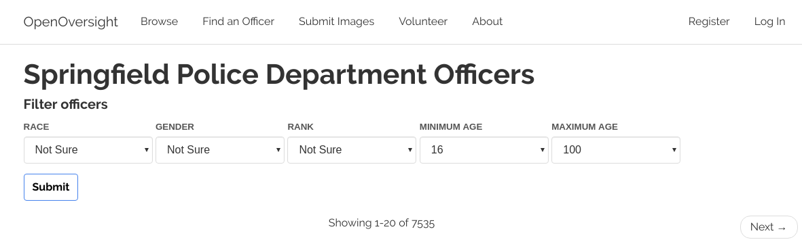
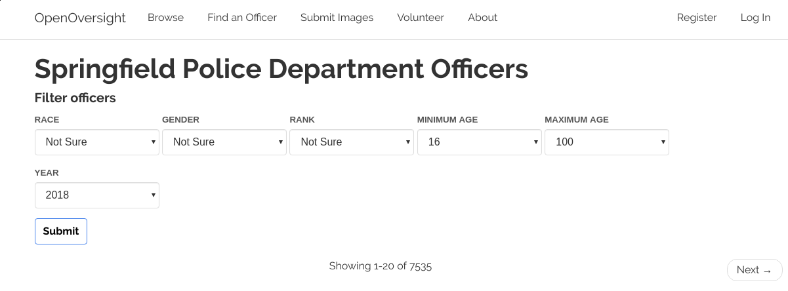

Fourth Week of RC
Day 3: The simple joy of TDD
March 12, 2019
Yesterday I submitted a pull request to OpenOversight to display officers who were employed within a certain year. Now that I've worked through earlier challenges, like how to debug a dockerized application, I'm making progress at a faster rate on OO. It's a good feeling.
The "browse department" page already included one form to browse officers by demographic information. I'd initially thought about making a separate form to view officers by year, but I decided to instead integrate the year selector into the existing form. The front-end went from looking like this:
to this
Simple, but effective.
Adding the year selector required a little bit of finagling with Python datetime objects. Each officer has a last_employment_date field, which is null for officers who still work for a specific department. The utils.py file has a method called filter_by_form(), that compares officers to the information a user puts into a form. I added the below code to filter by year
Since the form selects for year and officers' last_employment_date fields are, well, dates, I couldn't immediately compare year and last_employment_date. Instead, I created the min_employment_date, which is the first day of the selected year. Next, I wrote a filter to return any officer whose last_employment_date occurs after the min_employment_date, or who doesn't have any min_employment_date.
After implementing the year filter, a bunch of existing tests for the browse form broke. I got key errors because the existing tests didn't include the browse form's new field of year. This reminded me how much I appreciate TDD and its quiet dependability. Is there a way I can TDD household chores? It's worth a google.